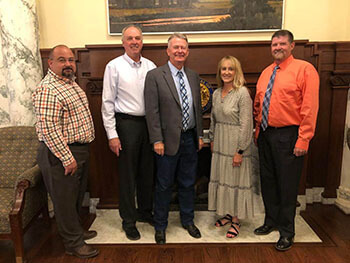

City council meets with governor (news is provided by The Preston Citizen)
By NECIA P. SEAMONS Citizen editor

While attending the Association of Idaho Cities Conference in Boise, Mayor
Dan Keller, Council President Allyson Wadsworth, Councilman Terry Larson and
Police Chief Dan McCammon met with Idaho Governor Brad Little. Many items
applicable to Preston were discussed, such as funding and progress of
Preston’s Wastewater Treatment Plant and possible future community funding.
”He was very accommodating,” said Mayor Keller, who let the governor know
that the wastewater treatment plan is an “extraordinarily large commitment”
for a city of Preston’s size. It exceeds the city’s annual budget by more
than 10 times, he told the governor...
Click here to read the full story.